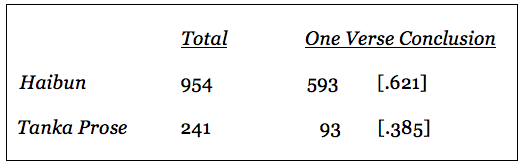
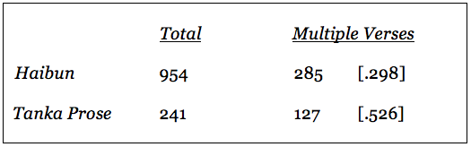
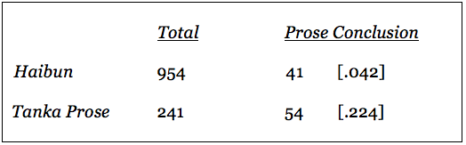
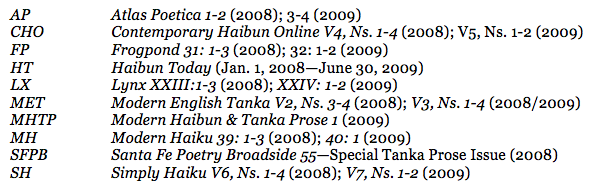
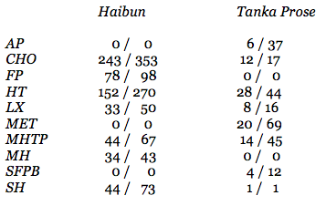
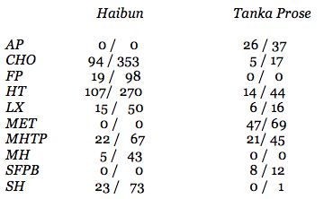
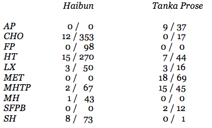
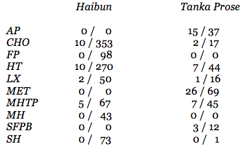

Introductory Remarks
Haibun and tanka prose alike combine two modes of writing: prose and verse. One formal aspect—predilection for verse type—is fundamental in their differentiation. Haibun favors haiku and tanka prose, tanka. Their distinctive traits stem from that one coarse and simple fact.1
Can we examine the prose and verse elements of these two genres, haibun and tanka prose, and quantify, for sake of comparison, their respective employment of the two written modes?
One paragraph, one verse, fini—no other form of haibun or tanka prose appears with greater regularity in print than this “basic unit.” One can safely name this the norm—so ubiquitous is it—from which every variation departs, beginning with the simple inversion of this building block (one verse, one paragraph).2 These observations are offered casually, however, from a reader’s familiarity with the relevant periodical literature. No prior statistical accounting of the phenomenon is known to this author.
The quantity and position of verses in relation to the prose play an important role in determining the character of the individual haibun or tanka prose work, in defining not only its specific form but its expressive nature.3 Here are some common ways that haibun or tanka prose can vary in terms of how many verses are present and in what position in relation to the prose:
- one verse only, which concludes the composition
- two or more verses anywhere in the composition
- prose conclusion, regardless of number of verses
- two or more adjacent or sequential verses without intervening prose
Are the frequencies of the preceding identical for haibun and tanka prose or are there significant disparities? And what, if anything, do the numbers mean?
In order to address these questions, a tabulation of published haibun and tanka prose writings, according to the above characteristics, was made for the 18 month period of January 1, 2008 through June 30, 2009. Ten print and online journals that regularly publish examples of haibun and tanka prose were consulted.4
Haibun & Tanka Prose by the Numbers
Let us compare, first, the frequency with which haibun and tanka prose contain one verse only and this verse, a haiku or tanka respectively, at the conclusion of the composition.
Table A: One Verse Conclusion5

Two observations can be made immediately. First, that 62% of the haibun and 38.5% of the tanka prose employ a solitary verse which completes the work is confirmation of what intuitively we’d discerned before—that this basic format is so widespread as to constitute a norm. Second, that haibun conforms more readily to this norm than does tanka prose is significant.
That haibun writings are more likely than tanka prose to open with one or more paragraphs of prose and conclude with a single verse is a circumstance which invites questions even as it fails to provide satisfactory answers. If tanka prose were nothing but haibun, for example, with tanka in lieu of haiku, then it would be reasonable to anticipate little or no disparity between tanka prose and haibun as regards the number of verses commonly used or the position in which a verse is most likely to be encountered.6 The numbers in Table A contradict this notion.
One partial explanation of the noted discrepancy may lie in the possibility that the longer history of haibun practice in English has led to the formation of a conservative and orthodox formal expectation that would limit haibun to the “one verse conclusion” format. Some evidence for this supposition is available if we compare the numbers of the two oldest haiku journals to the percentages in Table A. InFrogpond andModern Haiku, haibun with a one verse conclusion accounted for 79.5% and 79% respectively of the sample, a proportion considerably greater than the 62% of all sample haibun from the ten periodicals surveyed. It should not pass without comment, on the other hand, that tanka prose with a one verse conclusion in the tanka-only journalsAtlas Poetica andModern English Tanka accounted for only 16.2% and 28.9% respectively of their sample tanka prose, a proportion considerably smaller than the 38.5% of all sample tanka prose.7
The sharp contrast here between the structure of haibun in haiku-only journals and that of tanka prose in tanka-only journals, again, may be a product of the influence of haiku and tanka respectively or of traditions and conventions in English-language haiku and tanka circles. The phenomenon deserves closer attention.
How do haibun and tanka prose, then, compare upon the basis of the presence of two or more verses anywhere in the composition?
Table B: Multiple Verses8

Again, we observe a substantial difference in the tendencies of haibun and tanka prose with respect to the inclusion of more than one verse in the composition. Haibun possessed multiple verses in 29.8% and tanka prose in 52.6% of the individual compositions in our sample. This finding harmonizes with the numbers in Table A and allows one to state confidently that while haibun is more likely to restrict itself to one verse only, and this in the closing position of the composition, tanka prose is more likely to favor the use of multiple verses regardless of where, in relation to the prose, the verses are positioned. An answer to the question as to why this is so cannot be convincingly advanced upon the basis of the data from Tables A and B alone.
Because one verse conclusions are so prevalent in haibun and tanka prose alike, curiosity as to how frequently the two forms admit a prose conclusion is natural. The figures in Table C document that frequency without regard to the number of verses in the overall composition.
Table C: Prose Conclusion9

The divergence of haibun and tanka prose upon this point of form—admission of a prose conclusion—is both striking and unexpected. Only 4.2% of the sample haibun as against 22.4% of the sample tanka prose writings terminate in prose. Because it is difficult to postulate structural or aesthetic barriers to concluding a mixed prose-plus-verse composition with prose, a suspicion that established traditions or conventions may be directing haibun practice is aroused. Again, an examination of the contents of the haiku-only journals is suggestive.Frogpond andModern Haiku published 98 and 43 haibun respectively during the 18 months of our study; no haibun in the former and one haibun in the latter ended in prose.10 These numbers are not final proof but do lend credence to the hypothesis that formal conventions and expectations, without relation to known structural or aesthetic principles, may be limiting editorial and authorial practices. Be that as it may, even the formation of an orthodoxy in haiku and haibun circles, if it does exist, cannot wholly account for the dissimilarity of haibun and tanka prose practices on this point.
How do haibun and tanka prose, then, compare upon the basis of the presence of two or more adjacent verses—that is, of a verse sequence—without intervening prose?
Table D: Verse Sequence11

That verse sequences were found in 2.8% of our sample haibun as against 25.3% of our sample tanka prose is as striking as the former discovery, in Table C, of a sharp divergence between haibun and tanka prose in the matter of prose conclusions. The present discrepancy, given the earlier findings, is scarcely unexpected, however.
The haiku standards,Frogpond andModern Haiku, exhibited not one verse sequence in their combined 141 haibun. That finding is consistent with the trend evinced by the extreme rarity of prose conclusions to haibun in these venues. What is perplexing, however, is that haiku sequences proper—that is, multiple verses under one title without accompanying prose—are in evidence in both periodicals during the 18 months under review. At the same time, tanka prose in venues that focus on tanka and publish no haibun demonstrated the broadest acceptance of the verse sequence within tanka prose: 40.5% inAtlas Poetica and 37.6% inModern English Tanka.12
Should one ascribe this greater acceptance of verse sequences in tanka prose, however, to less firmly entrenched traditions in English-language tanka circles or, on the contrary, to venerable Japanese tanka traditions and to the nature of tanka itself?13 The problem is intriguing but our data is insufficient to offer a decisive solution.
Conclusion: What Do the Numbers Mean?
The findings of our study of the periodical literature, for the 18 month period of January 1, 2008 through June 30, 2009, can be broadly summarized as follows:
- that one verse conclusions, while a norm for haibun and tanka prose, constitute nearly two-thirds (62.1%) of the haibun sampled—that, in other words, haibun demonstrates a sharper tendency than does tanka prose (38.5%) to adopt a fixed number and position for its verse component;
- that multiple verses, wherever positioned in relation to the prose, are more likely to occur in tanka prose (52.6%) than in haibun compositions (29.8%);
- that prose conclusions and verse sequences, while rare in haibun (4.2% and 2.8% respectively), are not uncommon in tanka prose (22.4% and 25.3% respectively).
I doubt that these numbers prove anything definitively but they do isolate clearly some avenues for further inquiry and investigation.
The findings do support the hypothesis that the presence of differing verse forms is not without influence on the structure of the composition as a whole. If verse types could be freely substituted without altering compositional design, then we should find little or no discrepancy between haibun and tanka prose on those points we have examined. Significant disparity between haibun and tanka prose, however, is demonstrable with respect to each variable enumerated.
That haibun and tanka prose alike strongly adhere to the one verse conclusion can be ascribed to two circumstances. First, one paragraph plus one verse is the basic unit of haibun and tanka prose composition, uniting, as it does, the minimal representation of the two elements of their structure, prose and verse. Second, many topics or motifs are amenable to simple treatment of this kind and require no complications beyond the relation of one verse to an abbreviated body of prose.
How often do we read haibun or tanka prose, however, and intuitively judge that due proportion between prose and verse elements has not been observed—that, for example, the elevated poetic diction or thematic density of the prose requires the addition of a second or third verse or, conversely, that the presence of multiple verses is not fully justified by the brevity or lightness of the prose? Poor compositional skills inevitably answer for this lack of balance between prose and verse in many haibun and tanka prose as in literary products of any genre. What are we to make of the discovery, however, that, in the absence of any structural barriers, published haibun, in contrast with tanka prose, show such fidelity to the one verse conclusion model and such marked aversion to adoption of multiple verses, prose conclusions and verse sequences?14 That editorial or authorial allegiance to an orthodox formal expectation may be accountable, whether consciously formulated or uncritically received, is one possible explanation.
While the findings of this study point to significant differences between haibun and tanka prose, a full explanation of haibun’s greater adherence to the one verse conclusion model or of tanka prose’s readier acceptance of verse sequences, to focus only upon two contrastive points, cannot presently be advanced. The raw data available here, however, supports the view that two factors, at least, must be more closely examined in any responsible comparative study of haibun and tanka prose. First, the individual affinities of haiku and tanka, the foundational verse types for haibun and tanka prose, must be analyzed to better determine what influence these distinctive forms exert upon the prose that accompanies them. Second, the traditions and conventions of the English-language haiku and tanka communities, for better or worse, must be accounted for as well in any descriptive study.
End Notes
1. Jeffrey Woodward, “The Elements of Tanka Prose,”Modern English TankaV2, N4 (Summer 2008), p. 194, at < http://www.themetpress.com/MET/vol2/no4-MET8.html>, 10Oct09. Cf. Patricia Prime, “Talking Points: Jeffrey Woodward on Haibun and Tanka Prose,”Simply HaikuV6, N3 (Autumn 2008), at
<http://www.simplyhaiku.com/SHv6n3/features/Woodward.html> (Question & Answer 4), 10Oct09.
2. Woodward,ibid., p. 197.
3. Woodward,ibid., p. 197.
4. The sample population, for the 18 month period of Jan. 1, 2008 through June 30, 2009, includes all haibun and tanka prose published in the following journals:

5. The tally by journal for “Table A: One Verse Conclusion” is as follows:

The number before the slash indicates the number of haibun or tanka prose that have only one verse and that verse in a concluding position, whereas the number after the slash represents the total number of haibun or tanka prose in our sample. The same format—variable enumerated, slash, total sample—is followed in the recorded tallies for the charts below.
6. Belief that substitution of differing verse forms has little or no impact upon the nature of the composition as a whole or upon the quality of the prose companion in mixed prose-plus-verse forms is common. I’ve objected to this elsewhere. See Jeffrey Woodward, “Tanka Prose and Haibun Today,”Haibun Today, Sept. 25, 2008, at <http://haibuntoday.blogspot.com/2008/09/editorial-tanka-prose-and-haibun-today.html> (Paragraphs 2-3, 6), 10Oct09. Cf. Prime,op. cit., (Question & Answer 4): “Haiku and tanka differ in form and substance; their individual affinities inevitably have varying influence upon any prose context that they inhabit.”
7. The percentages forFrogpond,Modern Haiku, Atlas Poeticaand Modern English Tankaare derived from the tallies in footnote 5 above.
8. The tally by journal for “Table B: Multiple Verses” is as follows:

9. The tally by journal for “Table C: Prose Conclusion” is as follows:

10. The figures forFrogpond andModern Haikuare derived from the tallies in footnote 9 above.
11. The tally by journal for “Table D: Verse Sequence” is as follows:

12. The figures forFrogpond andModern Haikuas well as the percentages forAtlas PoeticaandModern English Tanka are derived from the tallies in footnote 11 above.
13. See Jin’ichi Konishi, “Association and Progression: Principles of Integration in Anthologies and Sequences of Japanese Court Poetry, A. D. 900-1350,” translated by Robert H. Brower and Earl Miner,Harvard Journal of Asiatic Studies, V 21 (December 1958), pp. 67-127, for a thorough discussion of the traditional methods of linking individual tanka into larger units such as imperial anthologies and one hundred poem sequences. Not only are such principles asassociation, based upon a comparison of images and rhetorical techniques, and temporalprogression, based upon the changing seasons, the ceremonial calendar, and the course of a love affair, brought into play but so are such intentional schemes as the employment of “background poems” (ji no uta) and “design poems” (mon no uta), of plain as contrasted with remarkable tanka, in order “to vary the pace and avoid monotony” (p. 111).
While Konishi’s study focuses upon the sophisticated design of theShinkokinshū(circa 1206) in particular, tanka, from theMan’yoshū(circa 780) forward, show a native tendency to integrate into sequences of two or more poems. The presentation of a tanka by one party required a reply in kind by the recipient; the response poem often borrowed language and imagery from the original poem, thus drawing the two tanka into intimate association.
Essential to any discussion of tanka prose, also, is a consideration of the Japanese long poem, thechōka. See1000 Poems from the Manyôshû: The Complete Nippon Gakujutsu Shinkokai Translation,Dover Publications, 2005, p. xx: “Generally speaking, the chōka is accompanied by one or two, or even several, short poems called hanka, somewhat in the manner of an ‘envoy,’ summarizing, or supplementing, or elaborating on, the contents of the main poem. The word hanka meaning ‘verse that repeats,’ was derived from Chinese classical poetry, in which the term is applied to a similar auxiliary verse.” Cf. Jin’ichi Konishi,A History of Japanese Literature, Volume One: The Archaic and Ancient Ages, translated by Aileen Gatten and Nicholas Teele, Princeton University Press, 1984, pp. 332-336, for a differing view of the historical derivation of the hanka. How individual tanka that constitute the envoy or hanka relate not only to the chōka but also to each other prefigures how individual tanka in a verse sequence within a tanka prose composition relate to the prose body as well as to the other members of the tanka set.
14. Brevity, for example, is one common characteristic of haiku and haibun but brevity alone does not prohibit the presence of verse sequences in a haibun composition. I cited above, in reference to the findings in Table D, the baffling fact that no verse sequences could be found in any of the sample haibun fromModern Haiku or Frogpond while, during the same 18 month period, independent haiku sequences were not infrequently present in these periodicals. See, inModern Haiku 39: 3(Autumn 2008), Dimitar Anakiev’s “Kosovo Peony,” p. 8, and Marian Olson’s “Sketches of Mexico,” p. 74, or inFrogpond 31:3(Fall 2008), pp. 41-47, seven haiku sequences. That haiku sequences can be composed and published without supporting prose negates any argument that the nature of haiku itself militates against the successful incorporation of haiku sequences within haibun.
An examination of Bashō’s practice, with respect to incorporating verse sequences in his haibun, is also instructive. See David Landis Barnhill,Bashō’s Journey, SUNY Press, 2005, where such sequences will be found in each of Bashō’s six major haibun (pp. 13-89) and in many of his shorter haibun as well, e.g., “Old Beggar” (pp. 95-96), “An Account of the Moon at Mount Obasute in Sarashina” (pp. 110-111), “On the Night of the 16th at Katada Bay” (pp. 130-131) and “Words Sent to Kyoriku” (p. 139). Similarly, prose conclusions are employed successfully in such haibun as “Knapsack Notebook” (pp. 29-43) and “Concerning the Beautiful Scenery at the Home of Master Shūa” (pp. 113-114).
First published inModern Haibun and Tanka Prose 2, Winter 2009, pp. 154-163.